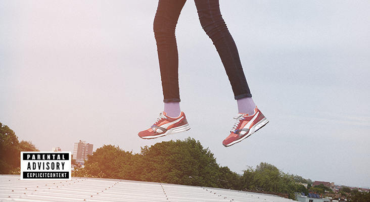
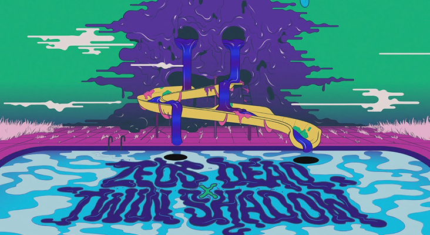

LATEST POSTS
JULY 07, 2014
ZHU IS ONE TO WATCH
121 COMMENTS
Think Disclosure meets The Weeknd with a spritz of some Dusky vibes and Frank Ocean… yeah that’s where the music Gods have blessed us with ZHU. The new music phenomenon that seemingly came out of nowhere yet sparked conversation amongst the biggest media outlets because of his OutKast tribute- ‘Moves Like Ms. Jackson’, is setting the bar high for up-and-comers with his own moves that spread like...READ MORE
JUNE 18, 2014
LIL SIMZ RELEASES NEW EP
36 COMMENTS "'E.D.G.E.' is that first showing of the transition, growth and progression in my art as this is my first original project soundscape-wise," she tells The Juice. "Everything was built from scratch and a majority of the tracks were recorded and mixed by me in my bedroom. I began recording 'E.D.G.E' at the end of the 'Blank Canvas' project, with 'Enter The Void' being the first song that I made. That shaped the tone of part of the EP's sonic and thematic journey."READ MORE
JUNE 14, 2014
ZEDS DEAD GETS TRIPPY
72 COMMENTS This week, Zeds Dead released their new and entrancing music video for their latest song ‘Lost You’ featuring Twin Shadow and D’angelo Lacy. At first glance the video may seem juvenile, but tells the story of someone going through heartbreak, through colourful and animated characters. Like many of Zeds Dead music videos, the video is very original and is sure to take you on a visual adventure. You can catch them at île Soniq Festival in Montreal...READ MORE
JUNE 08, 2014
MØ TAKES ON THE NIGHT
12 COMMENTSIn 2012, Copenhagen native Karen Marie Ørsted, better know by her stage name MØ (pronounced "moo"), released her first single "Maiden," a soulful track with a title that doubles as a direct translation of her stage name. The alt-pop artist then spent the next 18 months continuing that hot streak, with follow-up tracks "Glass," "Pilgrim," "Waste of Time" and an un-credited feature on Avicii's song "Dear Boy" all impressing in different ways.READ MORE
TRENDING POSTS


ABOUT ME

Super music enthusiast who is crazy about finding the next great sound. A variety of music genres tickle her fancy. From classic rock, country, world music, trap, soul, folk.. indie.. really... anything worth listening to!
JAM OF THE WEEK
LATEST MIX
ARCHIVE
JULY 2014
JUNE 2014
MAY 2014
- FO FO FADI. WHO IS TRIPPY TURTLE?
- CATCHING UP WITH FRENCH ARTIST MADEON
- SPRING TUNES TO MAKE YOU SWOON
- 10 NEW SONGS TO GET EXCITED ABOUT